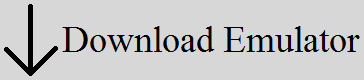
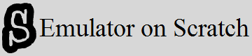

About | Download Emulator | Links

View the repo "JOSPre-Release" containing JOS code and emulator

Download the JOS emulator "JOSEmu.exe"

Visit the J&J Company website

View the JOS emulator created by savaka on Scratch

View the repo "web" containing these pages